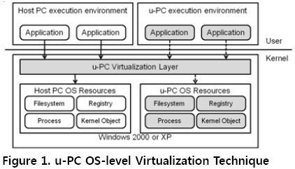
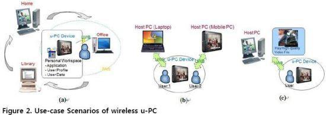
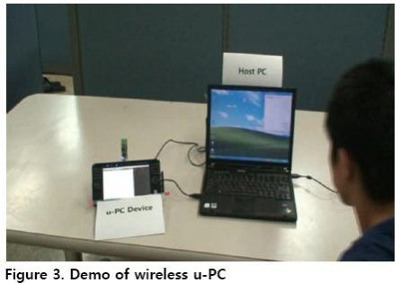

u-PC architecture
The personal workspace consists of user-specified computing environment such as user profile, applications and their configurations, and user data. On Windows 2000/XP, u-PC architecture provides the mobility of personal workspace by OS-level virtualization technique (by system call hooking). For this, a user can load the personal workspace in any host PC without complicate configuration process if he has the mobile storage (or device) that is contained loadable u-PC image. We are now researching challenging framework (or use-case model) of u-PC architecture based on OS-level virtualization technique.


Figure (a) depicts that the user who carries u-PC device loads personal workspace on public PC. The several users can load their own personal workspace on each Host PC with on a u-PC device at figure (b). Figure © depicts that the user play high-quality video file in u-PC device with particular video player.

Publications
- uPC player: 윈도우 운영체제에서의 OS가상화 기반 무상태 컴퓨팅 실행환경 지원 기술. 성백재, 박찬익. 정보과학회논문지:컴퓨팅의 실제 및 레터, 16권, 1호, pp. 125-129, 2010. 01.
- Wireless u-PC: 무선 네트워크 스토리지를 이용한 개인 컴퓨팅 환경의 이동성을 지원하는 서비스. 성백재, 황민경, 김인정, 이우중, 박찬익. 정보과학회논문지 : 컴퓨팅의 실제, pp. 916~920.
- u-PC: Personal Workspace on a Portable Storage. Injung Kim, Min Kyung Hwang, Woojoong Lee, and Chanik Park. ACM Mobility Conference 2007.
Patents
- iSCSI와 UPnP 표준을 이용한 가상 응용 수행 지원장치 및 이 장치의 이용방법. 박찬익,정석간,이경훈,이우중,김인정,황민경. 등록, 10-10-0869726, 20081114.